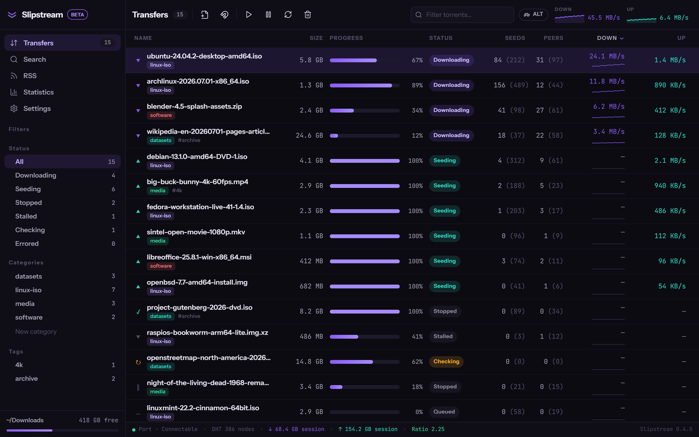

MANAGED ENGINE
No engine installed? One button fetches the official qBittorrent installer, verifies it against a pinned SHA-256, and boots an isolated instance — own profile, port, and credentials. Yours stays untouched.
04 · DESKTOP
A torrent client that installs and manages its own engine.
One click downloads the official qBittorrent installer, verifies it against a pinned SHA-256, and runs an isolated instance — own profile, own port, own credentials. Your existing setup is never touched.

No engine installed? One button fetches the official qBittorrent installer, verifies it against a pinned SHA-256, and boots an isolated instance — own profile, port, and credentials. Yours stays untouched.
Engine credentials are generated per machine and live in the OS keychain — not in a config file, not in plaintext. The frontend talks to the engine over localhost HTTP, nothing else.
Feeds with auto-download rules and multi-plugin search live inside the client. No browser round-trips — results land straight in the transfer list.
It doesn't find content. No indexers, no catalog, no discovery. Slipstream manages transfers you already have — where they come from is your business.
It doesn't torrent by itself. The engine is qBittorrent — official build, GPL, separate process — driven at arm's length over localhost. Slipstream installs it, supervises it, and stays out of its way.
It isn't code-signed yet. Windows SmartScreen will say "Windows protected your PC — unknown publisher." Click More info, then Run anyway — or verify the hash below first. Signing ships the day the certificate does; the release pipeline is already wired for it.
# PowerShell — check the installer against the published hash Get-FileHash .\Slipstream_0.4.0_x64-setup.exe -Algorithm SHA256 # expected: 1dc61364affe4159517d7cd36d366a5bafbcaf96104a8abd9ee49687185fd6bf # unsigned build: clear the Mark-of-the-Web, or the installer can be silently blocked Unblock-File .\Slipstream_0.4.0_x64-setup.exe .\Slipstream_0.4.0_x64-setup.exe
Updates are additionally verified in-app with a minisign signature before they apply.